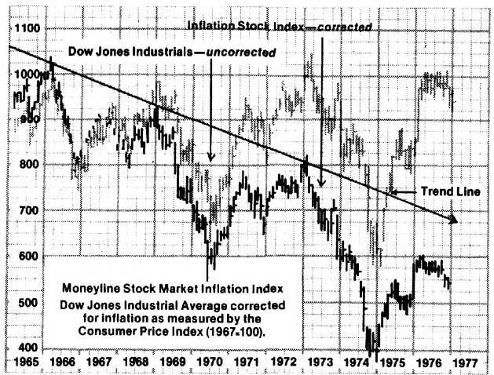

SOME ECONOMIC AND ENVIRONMENTAL MYTHS, THE REALITY BEHIND THEM . . . AND WHAT IT ALL MEANS TO YOU
THE POLITE FICTION: Western man's high standard of living is based on his clever technology, self-motivation, work ethic, economic system and regard for the individual. We have lost our way a little during the past few years . . . but all we have to do is fiddle around with political and economic ideas until we find exactly the right combination, and we'll all be riding the boom of the late 40's, the 50's, and the early 60's once again.
THE HARD FACTS: As Walter Prescott Webb pointed out as early as 1950 (read his book, The Great Frontier, and pages 12-17 of MOTHER NO. 32), Western man's clever technology, self-motivation, work ethic, economic system, and regard for the individual all came after and are all solidly rootedin the windfall resources and profits of The Great Frontier. (Webb gave this name to North America, South America, South Africa, Australia, New Zealand, and all the other smaller land masses that were-starting around 1500-dumped like a plum into the laps of the inhabitants of western Europe.)
And now that most of the cream has been skimmed from this windfall, capitalism (the economic system so ideally suited for the exploitation of a seemingly endless storehouse of natural riches) will decline, prosperity will slip through the fingers of England, Europe, and-finally-the Americas. The democracy of the frontier will give way to socialism and fascism. Governments will become stronger and individuals less important. I don't like this any better than you do, but Webb was right: The predictions he made 27 years ago are all coming true. Forewarned is forearmed.
THE POLITE FICTION: We've solved the big problem that all you environmentalists are always talking about. The U.S. has now brought its birth rate down to a zero population growth level.
THE HARD FACTS: Yes, the birth rate has dropped in this and some other countries. But there are currently more women of childbearing age living in the United States than ever before . . . so many more that even if we hold our birth rate at its present level (and we're not at all sure that can be done), the population of the U.S. will continue to grow until at least the year 2035-and probably beyond-before leveling off.
That's the Good News. The Bad News is that that's almost all the good news we have to report about population. Few other countries are doing as well as we are . . . and most of the underdeveloped nations are losing the population war completely. For example, Mexico-which currently has 66 million citizens-will have 135 million just 23 years from now. How do you like the idea of that kind of mushrooming population pressure right on our southern doorstep?
THE POLITE FICTION: In late 1973-at the height of the Organization of Petroleum Exporting Countries' oil embargo and when the United States still imported less than 30% of the petroleum it used-President Nixon declared that his Project Independence would make this nation "energy self-sufficient" by 1980.
THE HARD FACTS: It is now 1977 and our oil imports have gone up (to over 40% of all the petroleum we use) instead of down. Furthermore, if present trends continue, we will be importing more than half the oil we consume by the time 1980 rolls around . . . the same 1980 that we were told would find us importing no petroleum at all.
THE POLITE FICTION: There isn't any real oil shortage anyway. The big petroleum companies and OPEC are just holding back production to force their prices up.
THE HARD FACTS: There is no doubt that the OPEC cartel and the large energy companies have manipulated the price of oil and natural gas ( and propane and coal and uranium, etc.) to their advantage. You'd probably do the same thing if you were in their position.
But that in no way compromises the fact that the OPEC nations and the large energy companies are now in position to flex their economic muscles precisely because the energy-hungry industrialized countries of the world have already consumed the planet's most easily exploited sources of fuel. We are running out of low-cost, easily tapped petroleum. And, although we do have massive reserves of coal to turn to, it will be increasingly expensive to mine, transport, process, and burn most of that coal in an environmentally acceptable manner. (Remember that most of us quit heating with coal 30 to 50 years ago because it was dirty and cumbersome to handle, its smoke choked us, and its soot settled all over our clothes, houses, and yards. Those problems remain to be solved.)
THE POLITE FICTION: We don't need fossil fuels anyway. If it weren't for some dumb environmentalists, we'd already have switched to atomic energy by now and there wouldn't be any problem. We'd have all the energy we want.
THE HARD FACTS: Ah, yes. This is the "solution" the Big Boys-dictatorial governments and the monster energy companies-have been pushing for years. Why? Because they'd love the near-absolute control of the planet that they'd enjoy if they could supply all our energy needs with a relatively small handful of generating stations that operate on a virtually inexhaustible fuel.
Fortunately for us all, however, that dream (nightmare?) is not to be. There simply isn't that much usable radioactive fuel on the planet, for one thing. And-at least with today's technology-by the time what nuclear fuel there is is mined and processed . . . and the generating plants that use it are built and operated and then, after only a few years, dismantled and stored (along with the rest of the radioactive "waste") away from all life for hundreds of thousands of years . . . it will be obvious that nuclear power is nothing but a farce. It actually consumes more of the planet's resources than it delivers as useful energy.
To say nothing of the rapidly escalating risk that terrorists will highjack enough plutonium from the "peaceful" nuclear industry to build an atomic bomb . . . or simply sprinkle over one of our large cities. Or of the terrible and terribly unnecessary danger to which we expose all the earth's living things for the next 500,000 years every time we use nuclear energy to generate a single kilowatt of electricity today.
Thank God that even the vested interests of the Nuclear Establishment are finally beginning to realize the utter folly of this particular insanity.
THE POLITE FICTION: The U.S. Social Security System guarantees us a secure old age in which we'll all get back-with interest-the money we've paid in during our working years.
THE HARD FACTS: Our social security system-as even then-Secretary of the Treasury William Simon stated in a Wall Street Journal editorial in November of 1976-is an enormous, bankrupt Ponzi scheme which owns no real assets at all . . . yet which is obligated to pay out approximately 3.5 trillion dollars over the next 75 years.
THE POLITE FICTION: Well, if something happens to social security, I've always got my pension to fall back on.
THE HARD FACTS: Even with the tougher new vesting laws, probably 80% of all people now covered by pension plans will never collect a penny of the money due them. They'll die before retirement. A technicality will keep them from qualifying for the payments they thought they'd receive. Poor management will wipe out some funds. Inflation will kill others. And socialism (remember the inevitable socialism that Walter Prescott Webb predicted 27 years ago?) will do in the rest.
Few people say it out loud, but all pension plans are founded on the assumption that they'll somehow guarantee a secure old age to "exploited" workers by making it possible for those workers to expropriate the profits of their capitalist employers. However, if present trends (the investment of pension funds in industrial stocks) continue, the pension funds themselves will own a legally controlling interest in all the corporations listed on the New York Stock Exchange by 1990. And the only way that workers will be able to expropriate profits from their capitalist "exploiters" after that . . will be by taking those profits away from themselves! Lots of luck, fellows.
THE POLITE FICTION: To heck with social security and pensions anyway. I've bought a guaranteed annuity that'll support me in my old age.
THE HARD FACTS: And unfortunately for you, you'll receive that annuity ( if you collect it) sometime in the future, in paper dollars, and in an amount based on the living expenses of yesterday or today. If you don't really understand what that means, go to the library and leaf through magazines of the 20's until you find an annuity company ad featuring a smiling couple saying, "We retired happily on $200 a month."
Now then: How far would that $200 take two people today? And how much does your annuity guarantee you? And how much do you really think you'll need every month to see you through your retirement?
THE POLITE FICTION: Then I'll just save my money, put it in a bank, draw interest, and retire on that. I can't lose on this one, especially since my bank account is insured by the federal government.
THE HARD FACTS: The Federal Deposit Insurance Corporation is an independent agency of the federal government. It can be cut loose and cast adrift at any time the politicians in Washington decide to do so . . . but it probably never will be, since the FDIC itself is nothing but a gigantic shell game. That is: As of 1975, bank deposits in the United States totaled $879 billion . . . but there was less than one percent of that amount ($6.7 billion) in the official FDIC fund. And this "reserve" wasn't even real wealth. It was U.S. Government securities. Paper.
So how will the FDIC reimburse you-and millions of other people-if a sizable portion of this nation's bank deposits are suddenly wiped out by an economic upheaval? The U.S. Treasury and the Federal Reserve System will crank up the printing presses and pay you with crisp new paper money. Not with silver. Not with gold. Not with cattle or groceries or houses . . . but with money that, in the most basic sense, "won't be worth the paper it's printed on". You'll get your dollars back all right . . . but how much true value will you receive?
But let's be optimistic and hope that there won't be wholesale bank failures sometime in the future. Let's just look at that bank account of yours today and see what it's doing for you. And what do we find: The interest you're drawing is, at best, barely replacing the value that inflation is eroding away from the dollars you've saved. Sorry, but you're never going to build a retirement fund of your own that way.
THE POLITE FICTION: I'll try the stock market then. It's had its ups and downs along the way, but the stock market has held its basic value during the past 10 years. It pushed above 900 in 1967 and it's still hanging in there between 900 and 1000 right now.
THE HARD FACTS: Only idiots and clowns measure things with a rubber yardstick. When the inflation of the last decade is discounted and the Dow Jones Industrial Averages are calculated in standard 1967 dollars, any fool can see that the D-J closed 1976 (and, at this writing, still remains) around the 550 level. Which is to say that the stock market has actually lost almost half its value during the past 10 years.
THE POLITE FICTION: Maybe so. But our government and the other governments of the world are going to lick inflation . . . and the people who cause it.
THE HARD FACTS: Inflation is not caused by rapacious speculators, it is not caused by greedy manufacturers and retailers, it is not caused by grasping labor unions, it is not caused by oil or other commodity cartels, it is not caused by you or by me. We all raise our prices- after inflation has become a fact-in an increasingly desperate effort merely to "keep even with" or "get ahead of" the cuts that inflation makes in our real incomes.
Inflation is always and only caused by debasement of currency . . . by the creation of worthless money which is worthless simply because it has been created and put into circulation with no hard assets-no real wealth, such as silver or gold or wheat or iron-to back it. When this is done by counterfeiters, the government declares their activities illegal and throws the offenders in jail. When it's done by the government itself, however, the government gets angry at us and tells us that we must not allow all those worthless dollars to bid our prices up in any way. But that, if we do, we are to be punished with wage and price controls, with higher taxes, by having our right to own gold taken away, and with other government actions.
If our government or any other government in the world really wants to stop inflation dead in its tracks IMMEDIATELY, all it has to do is stop issuing worthless, unbacked currency . Stop living beyond its means and paying its bills with paper. Stop its politicians from promising everything to everybody . . . and then paying off those promises with worthless printing press money.
THE POLITE FICTION: When all's said and done, I'd still rather live with a little inflation than another depression. If the federal government can keep us out of a depression by pumping a few extra dollars into the economy, then I'm all for it.
THE HARD FACTS: Just as there is no such thing as being a "little pregnant", there is no such thing as a "little inflation". A country simply cannot "spend itself into prosperity" with unbacked, worthless, paper money. And, once it has embarked upon this absurd undertaking, it can't even maintain the illusion of such a miracle unless it steadily runs its fiat money machines-its printing presses-faster and faster and faster still. Until-finally!- everyone knows that its currency is worthless and refuses to take it anymore. And that's when the real depression sets in.
Politicians and economists have been trying to "cure" small recessions with a "little inflation" for 4,500 years. And, for 4,500 years, their "little inflations"-sooner or later-have always led to bigger inflations which, in turn, have always led to runaway inflations which, in turn, have always ended in depressions.
History is littered with the ruins of many great civilizations that fell not because of attacks from without . . . but because of inflation and depression from within. This seems to be one of mankind's major weaknesses and there is little chance that you or I or you and I together will remedy it at this late date.
We can, however, do what wise men and women have done down through the ages: Close our ears to the "party line", recognize the truth of the matter, take steps to protect ourselves from the inflation currently eating away at us, and prepare ourselves for the depression that almost certainly lies ahead.
Herman Kahn (who, after all, is paid handsomely by the military-industrial complex in this country to do exactly that) may be wonderfully optimistic about man's future on this planet. Jimmy Carter Oust as President Nixon did right up to the day-August 15, 1971-that he slapped on controls) may seem to have pledged that he'll never resort to wage and price controls. And all the politicians in the country- and their tame economists and seers into the future-may really believe (as they forever tell us) that they actually know how to "get this country moving again". But that is all wishful thinking, opinion, and supposition. The FACTS are:
[1] There are more people alive on this planet and less easily tapped resources to divide up among them today than ever before. And both trends (more and more people and less and less easily tapped resources) will continue as far as we can comfortably see into the future . . . unless, of course, they're upset-which they could be at any time-by all-out war, drastic climatic change, or some other catastrophe of that magnitude. And such a disruption would only make the situation worse . . . not better
[2] There is no quick and easy way out of the pinch that is developing between our planet's rising human population and falling level of resources. The bloom is even fading from nuclear energy-the Establishment's "Great White Hope"-and it's almost a certainty that the atom will never deliver the abundance "in the nick of time" that we've been promised.
[3] The party, then, is drawing to a close and the piper soon must be paid. Unfortunately, however, a lot of wild promises of future security, peace, and contentment were made to a lot of people during the binge. And very few, if any, of those promises will be kept . . . simply because very few of those promises can be kept. A great many people, especially those who blindly persist in believing the paper promises of our "leaders", are going to be hurt and hurt bad.
[4] Luckily, however, you and yours don't necessarily have to share in that misery. If others choose to disregard basic environmental and economic laws until the day of reckoning is at hand, that's their business. But it doesn't have to be yours.
Open your eyes. Face the facts. See things as they are . . . rather than as our "leaders" or the E-Z Credit Company would have you see them. We've said it in these pages many times before, but we'll say it again:
Western Man's 450-year-long expansionary binge-which was fueled by inexpensive, plentiful energy and other natural resources-is now drawing to a close. And, just as Walter Prescott Webb predicted 27 years ago, the industrialized nations of the world are having a difficult time understanding what is happening to them. The sooner our "leaders" realize this and begin converting the planet's countries to a steady-state economy, the better.
In the meantime, there's no need for you to wait until those "leaders" wise up. If you haven't already done so, learn to become as food and energy self-sufficient as possible . . . and do it. Convert to wood heat. Build or buy a solar collector and use it to supply your household with hot water. Convert the whole dwelling to solar heat! And if it won't convert, move your family into another residence that will. Build a greenhouse, and use it. Plant a garden. Can your produce, dry it, or keep it in a root cellar. Start a backyard mini-flock of chickens. Feed your leftovers to a pig. Raise rabbits. Get yourself a cow or a couple of milk goats.
Strive, also, for economic self-sufficiency. Learn a basic trade or set up a home business that will always be in demand and which you or your family can control. Put yourself on a pay-as-you-go basis. Invest your excess funds in real wealth: land, how-to books, quality tools, and trade goods (liquor, tobacco, salt, ammunition, toilet paper, silver coins, coffee, etc.) that will always have a value no matter what our addled economists and politicians do with their paper promises of future security.
And what if the worst never comes to pass? What if our "leaders" really do work a miracle and dampen inflation before it plunges us all into a depression? What if they actually work their magic so well that times (as promised) do nothing but get better and better from now until eternity?
Wonderful! But keep right on tending that garden and converting yourself to solar energy anyway. At the very least, you'll still be ahead of the game. It's hard to beat the satisfactions of self-sufficiency and independence. Even in "normal" times, economic virtue is its own reward.
SPECIAL NOTE: The chart shown here was "lifted" from International Moneyline, 16 East Trail, Darien, Connecticut 16820. And some of the ideas and facts presented above were taken from Myers' Finance & Energy Newsletter, Gottfried-Keller-Strasse 7,8001 Zurich, Switzerland and from How You Can Profit From the Coming Price Controls, published by Dr. Gary North, Remnant Review, P.O. Box 1580, Springfield, Virginia 22151. Various books, pamphlets, and newsletters are available from all three of the above addresses and you'd be wise to write and request subscription and purchasing information from each one.
|
 |
|
|